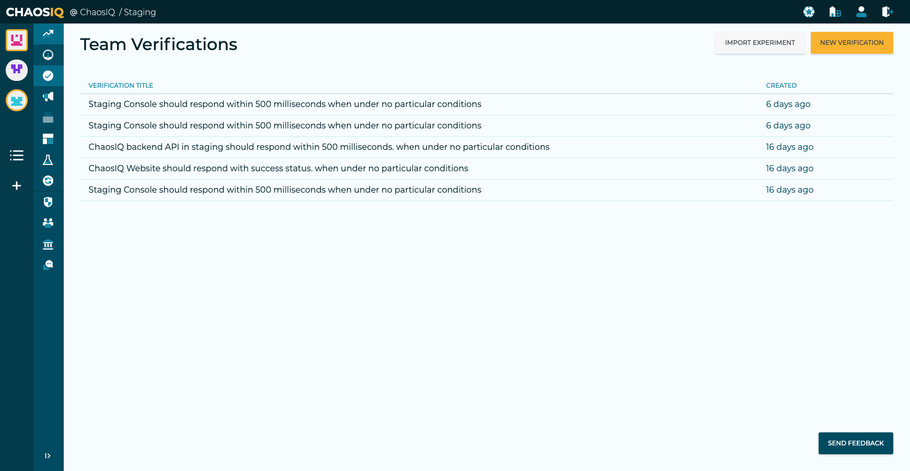
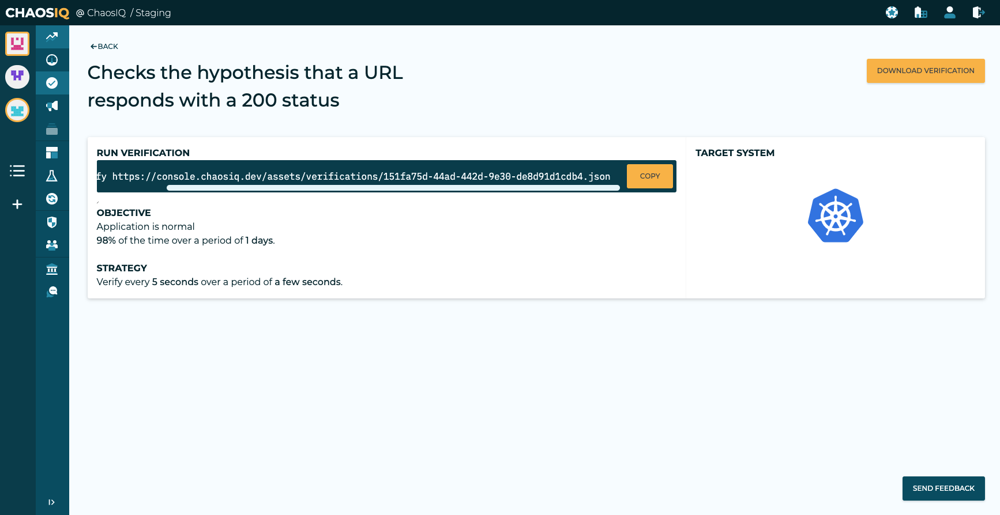

Running using the CLI
To run experiments and verifications locally you will need to install the Chaos Toolkit, this is covered in the Getting Started section, in the Chaos Toolkit installation page.
To run verifications and to use ChaosIQ you will also need the ChaosIQ plugin, again this is covered in the Getting Started section, ChaosIQ Plugin installation.
To confirm the Chaos Toolkit and the ChaosIQ extension are installed, open up a terminal window and activate your virtual environment for the Chaos Toolkit and enter chaos --help:
Usage: chaos [OPTIONS] COMMAND [ARGS]...
Options:
--version Show the version and exit.
--verbose Display debug level traces.
--no-version-check Do not search for an updated version of the
chaostoolkit.
--change-dir TEXT Change directory before running experiment.
--no-log-file Disable logging to file entirely.
--log-file TEXT File path where to write the command's log.
[default: chaostoolkit.log]
--log-format [string|json] Console logging format: string, json.
--settings TEXT Path to the settings file. [default:
/Users/grant/.chaostoolkit/settings.yaml]
--help Show this message and exit.
Commands:
disable Disable a ChaosIQ feature
discover Discover capabilities and experiments.
enable Enable a ChaosIQ feature
info Display information about the Chaos Toolkit environment.
init Initialize a new experiment from discovered capabilities.
org Set ChaosIQ organisation
publish Publish your experiment's journal to ChaosIQ
run Run the experiment loaded from SOURCE, either a local file or a...
signin Sign-in with your ChaosIQ credentials
team Set ChaosIQ team
validate Validate the experiment at PATH.
verify Run the verification loaded from SOURCE, either a local file or...
If the output is like the above this confirms you have the Chaos Toolkit and the ChaosIQ extension installed.
To run a simple experiment you can use one of the experiments from the Open Chaos Experiment Catalog, such as the UrlRespondsExperiment. This can be run with:
ENDPOINT_URL=https://httpstat.us/200?sleep=2000 \
chaos run https://raw.githubusercontent.com/open-chaos/experiment-catalog/master/local/url-responds/url-responds.json
This should result in output like:
2020-04-01 10:40:42 INFO] Validating the experiment's syntax
[2020-04-01 10:40:42 INFO] Experiment looks valid
[2020-04-01 10:40:42 INFO] Running experiment: Checks the hypothesis that a URL responds with a 200 status
[2020-04-01 10:40:44 INFO] Execution available at http://console.chaosiq.io/ChaosIQ/Staging/executions/4b10f6c5-a62f-4e52-ba4e-6db0b2cb7bf8
[2020-04-01 10:40:45 INFO] Steady state hypothesis: Application is normal
[2020-04-01 10:40:47 INFO] Probe: application-must-respond-normally
[2020-04-01 10:40:51 INFO] Steady state hypothesis is met!
[2020-04-01 10:40:54 INFO] Action: dummy step
[2020-04-01 10:40:56 INFO] Steady state hypothesis: Application is normal
[2020-04-01 10:40:59 INFO] Probe: application-must-respond-normally
[2020-04-01 10:41:02 INFO] Steady state hypothesis is met!
[2020-04-01 10:41:03 INFO] Let's rollback...
[2020-04-01 10:41:04 INFO] No declared rollbacks, let's move on.
[2020-04-01 10:41:06 INFO] Experiment ended with status: completed
You could equally download the json file from the catalog and run locally with the command:
ENDPOINT_URL=https://httpstat.us/200?sleep=2000 \
chaos run url-responds.json
Run a Verification
To run a verification from your local CLI you need to sign-in to ChaosIQ with a token and select your default organization and team.
You can then login to ChaosIQ from a browser, ensure you are using the same organization and team. You can either create a new verification from the Verifications page or import an experiment:

Here we will go through the steps to import an experiment. Select the Import Experiment button:

Either drag your experiment file or select Choose File to navigate to the file in your local directory. The page will show the probes and actions that have been detected in your experiment.
The title from your steady-state hypothesis will be used as your objective name. The title from your experiment will be used as your verification name. These can be modified as required.

You will then need to populate your objective data where you define your success criteria, this would be something like 98% over 1 day.
You will also specify a frequency, as this is just an example verification you can use something like a Frequency of 5 seconds for a duration of 30 seconds.
Note
For a verifications, more realistic figures would be used.

You can then select the Create Verification and View Execution Steps button, this will display the steps required to execute the verification or you can download the verification to run locally.

You can use the URL on this page to execute the verification from your terminal, for my verification the command is:
ENDPOINT_URL=https://httpstat.us/200?sleep=2000 \
chaos verify https://console.chaosiq.dev/assets/verifications/151fa75d-44ad-442d-9e30-de8d91d1cdb4.json
Note
You will need to modify the above command to use your own URL generated from ChaosIQ.
You should see output similar to:
[2020-04-01 12:10:57 INFO] Validating the experiment's syntax
[2020-04-01 12:10:57 INFO] Experiment looks valid
[2020-04-01 12:10:57 INFO] Verification looks valid
[2020-04-01 12:10:58 INFO] Execution available at http://console.chaosiq.io/ChaosIQ/Staging/executions/830ad7ae-3ab0-4c56-8e4a-ecb92d6fb08e
[2020-04-01 12:10:59 INFO] Started run 'e4b3d029-6754-4253-a830-39d000d976b1' of verification 'Checks the hypothesis that a URL responds with a 200 status'
[2020-04-01 12:11:00 INFO] Starting verification warm-up period of None seconds
[2020-04-01 12:11:00 INFO] Finished verification warm-up
[2020-04-01 12:11:00 INFO] Triggering verification conditions
[2020-04-01 12:11:01 INFO] Starting verification measurement every 5 seconds
[2020-04-01 12:11:01 INFO] Running verification measurement 1
[2020-04-01 12:11:01 INFO] Steady state hypothesis: Application is normal
[2020-04-01 12:11:01 INFO] Probe: application-must-respond-normally
[2020-04-01 12:11:03 INFO] Action: dummy step
[2020-04-01 12:11:04 INFO] Steady state hypothesis is met!
[2020-04-01 12:11:07 INFO] Finished triggering verification conditions
[2020-04-01 12:11:07 INFO] Starting verification conditions for 30.0 seconds
[2020-04-01 12:11:10 INFO] Running verification measurement 2
[2020-04-01 12:11:10 INFO] Steady state hypothesis: Application is normal
[2020-04-01 12:11:10 INFO] Probe: application-must-respond-normally
[2020-04-01 12:11:12 INFO] Steady state hypothesis is met!
[2020-04-01 12:11:19 INFO] Running verification measurement 3
[2020-04-01 12:11:19 INFO] Steady state hypothesis: Application is normal
[2020-04-01 12:11:19 INFO] Probe: application-must-respond-normally
[2020-04-01 12:11:21 INFO] Steady state hypothesis is met!
[2020-04-01 12:11:27 INFO] Running verification measurement 4
[2020-04-01 12:11:27 INFO] Steady state hypothesis: Application is normal
[2020-04-01 12:11:27 INFO] Probe: application-must-respond-normally
[2020-04-01 12:11:30 INFO] Steady state hypothesis is met!
[2020-04-01 12:11:36 INFO] Running verification measurement 5
[2020-04-01 12:11:36 INFO] Steady state hypothesis: Application is normal
[2020-04-01 12:11:36 INFO] Probe: application-must-respond-normally
[2020-04-01 12:11:37 INFO] Finished verification conditions duration
[2020-04-01 12:11:37 INFO] Starting verification cool-down period of None seconds
[2020-04-01 12:11:39 INFO] Finished verification cool-down period
[2020-04-01 12:11:39 INFO] Steady state hypothesis is met!
[2020-04-01 12:11:46 INFO] Stopping verification measurements. 5 measurements taken
[2020-04-01 12:11:46 INFO] Triggering any verification rollbacks
[2020-04-01 12:11:46 INFO] Let's rollback...
[2020-04-01 12:11:47 INFO] No declared rollbacks, let's move on.
[2020-04-01 12:11:48 INFO] Finished triggering any verification rollbacks
[2020-04-01 12:11:51 INFO] Finished running verification: Checks the hypothesis that a URL responds with a 200 status
View the Verification on the Insights Page
When the verification is completed you should see the Verification on the ChaosIQ Insights page. If you select your verification the insights details will be displayed:

This page shows the detail of the verification that has been run including a timeline of the measurements taken and any impact seen.
In this section we have:
- Setup the Chaos Toolkit and installed the ChaosIQ plugin.
- Run a simple experiment locally.
- We signed the Chaos Toolkit into ChaosIQ.
- Created a Verification by import an experiment into ChaosIQ.
- Run the verification locally and published to the results to ChaosIQ.